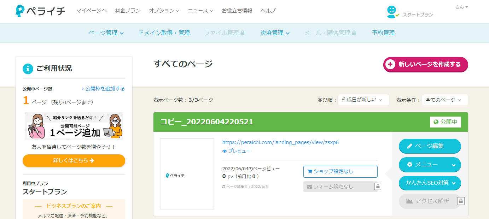
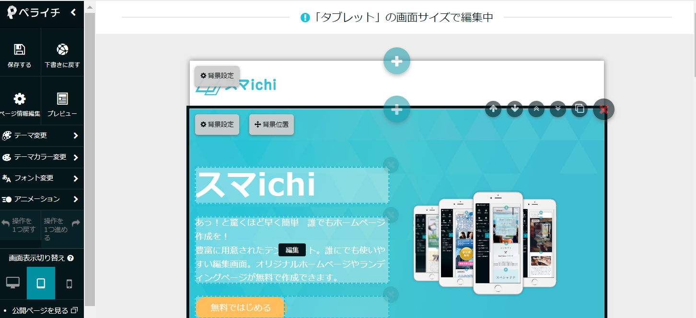
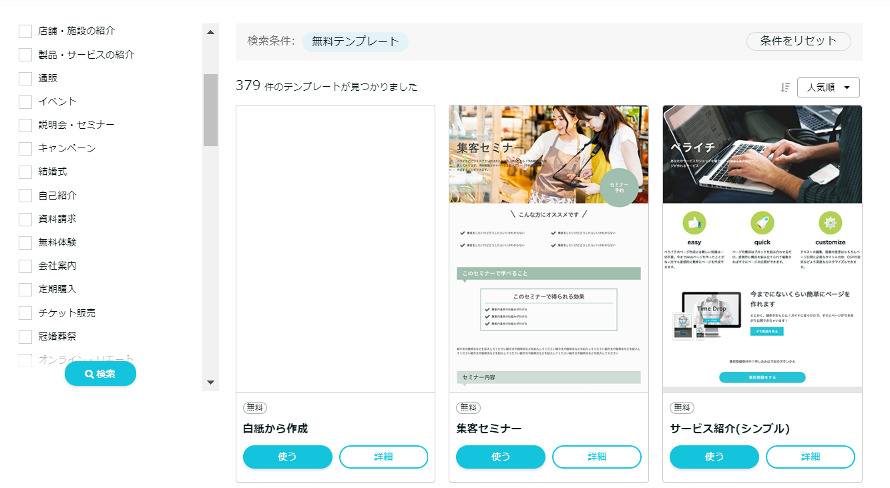
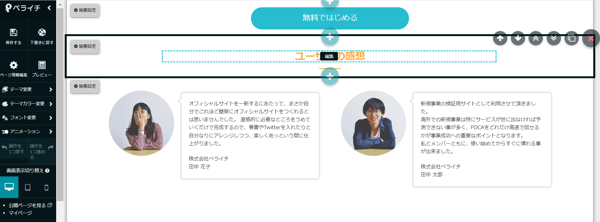
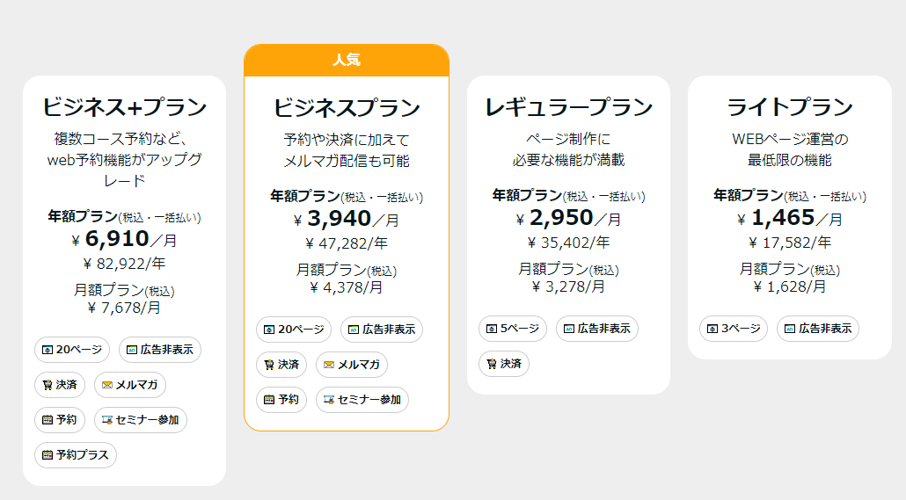
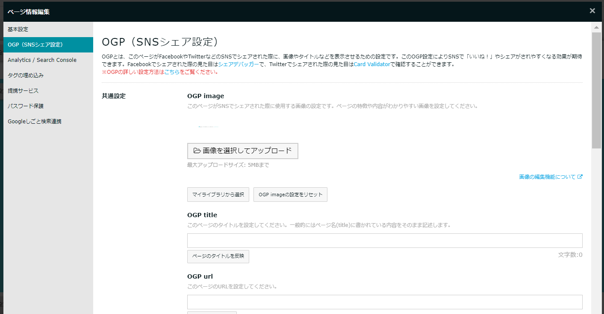

| デザインテーマ | ◎ 90点 |
|---|---|
| 編集機能 | ◎ 90点 |
| プラン料金 | 〇 70点 |
| 登録ページ数 | × 40点 |
ペライチは日本発のホームぺージ作成サービスになります。無料プランと有償プランがありになって登録ユーザー数が累計40万アカウントを突破しました。
ランディングページが簡単に作れる。というコンセプトからサービスが始まっていますが、今ではあらゆるタイプのWebサイトの構築が出来るほどにサービス内容が良くなっています。
デザインテンプレートは約400種類。フラットデザインであらゆるタイプのデザインテーマが配布されています。 デザインも作りこまれていてモダンなだけでなくサイト導線も考えられているので、あったテーマを探せればその時点でクオリティの高いサイトの基本は出来ています 。
サポートが充実していて、ペライチサポーターと呼ばれる400名近いサポーターからの支援が受けられるだけでなく、電話でのお問合せも受けてくれます。 WIXなどの海外サイトビルダーに比べて問合せ対応が充実している点も特徴になります。
ちゃんとした作りこみが出来て、編集操作もとてもわかりやすい。そしてサポートも完備。WIXと同様に無料プラン以外はそれなりの費用がかかりますが、 登録者の増え方からすると、いま最も選ばれているWebサイトビルダーだと思われます。
ペライチ 30日間お試し
ペライチの管理画面イメージ
ペライチには無料プランがあるため、まず0円でアカウントを開設してサービスを体験することができます。
WIXほど高機能ではありませんが、制作ツールのわかりやすさとサポート体制が充実していることから、ストレスなく作りこめるのが特徴と言えます。
種類が豊富で導線がしっかり作られているデザインテーマによって、テーマを選ぶだけでかなり完成した状態になっています。
お問合せフォームの設置や、決済にも対応できるため自社サービスや商材を販売することも出来ます。 塾、習い事、セミナー集客、サロン、士業、フィットネスなど、あらゆるサービスの説明やランディングページに向いたサービスだと言えるでしょう。
ペライチにはスタートプラン（無料）、ライト、レギュラー、ビジネス、ビジネスプラスの5種類のプランがあります。
無料プランは作成できるページが1ページのみでページ内に広告が表示されます。
| スタートプラン 無料 |
ライト | レギュラー | ビジネス | |
|---|---|---|---|---|
| 料金 | 0円 | 1,629円 | 3,278円 | 4,378円 |
| ページ数 | 1ページ | 3ページ | 5ページ | 20ページ |
| 独自ドメイン | － | 〇 | 〇 | 〇 |
| フォーム設置 | － | 〇 | 〇 | 〇 |
| 広告非表示 | － | 〇 | 〇 | 〇 |
| HTML・CSS編集 | － | － | 〇 | 〇 |
| 決済 | － | － | 〇 | 〇 |
| メルマガ作成 | － | － | － | 〇 |
| パスワード保護 | － | － | － | 〇 |
| 予約機能 | － | － | － | 〇 |
| ファイルダウンロード | － | － | － | 〇 |
ペライチの編集機能は実際に触ってみてわかりましたが、思った以上に「わかりやすい操作性」で、かつ「様々な編集が出来るそれなりに高機能」な管理画面になっています。

基本的には選んだデザインテーマに沿ってテキストや素材を入れ替えして構築します。PC、スマホ画面の切り替えも一瞬で出来ます。フォントの置換やCSS編集だけでなく アニメーションで動きのある修正もできます。

テーマの種類は400種類もあります。コーポレートサイト、採用、店舗向け、サービス紹介、通販、イベント、説明会、キャンペーン、資料請求など様々なテーマが揃っています。
6月現在で無料版だけでも379種類のテンプレートがあります。

デザインテーマはフラットデザインでモダンな作りになっているテーマが多くあります。次のように2カラムで丸く切り出したフォトコラージュな どは実際コーディングして作ると大変な作業になりますが、テーマで配布されていればテキストを入れるだけで作れてしまいます。 このようなカッコいいデザインがたくさんあります。


プラン料金については無料プランがあることが大きな長所になっています。有償プランについてはライトプランで月額1,629円、レギュラープランで3,278円と それなりに費用が発生する料金体系になっています。ある程度の料金がかかりますがサービス内容の良さと比例している料金体系だと言えます。

SEOは「ページ基本情報」や「かんたんSEO機能」から編集が出来ます。メタタグやOGP設定、サーチコンソールなどとの連携が簡単に出来るようになっています。
アクセス解析の基本的なところは抑えられています。ただしページ数は最大で20ページまでとなり、レギュラープランでも5ページまでになります。 作れるページ数が限られているため多くのページを作ってのSEO施策は出来ません。
思った以上にデザインツールと編集機能がわかりやすいため、あまりサポートの必要性を感じませんが 「動画マニュアル」「解説記事」「オンライン自習室」「ページ添削」などの基本的なサポート体制が充実しているのがペライチになります。 さらにワークショップや個別サポートなど対面形式でのサポートも実施されています。
無料プランがあり0円でサイト作成が出来る点は利点と言えるでしょう。無料プランで作れるのは1ページだけになりますが、大半の機能は導入されているのでクオリティの高いページが作れると思います。ページ内にペライチの会社広告が出ますがお試し期間を気にすることなく活用できます。
さらに有料プランにもお試し期間が提供されています。30日間は無料でサイトを作ることができます。
400種類あるデザインテーマのクオリティが高いことは説明をしましたが、日本企業が運営していることもあり日本のサイトのテイストにあったものが多くなっています。9割以上が無料テーマというのも高ポイント。
ペライチでは制作のための労力を減らすために「使い方動画」「解説記事」「ヘルプページ」「オンライン自習室」「ページ添削」「ワークショップ」「個別サポート」など実に様々なカリキュラムを提供しています。
そのため他のウェブサイトビルダーに比べて作りやすいサービスになっています。WIXでは操作が複雑で戸惑ってしまった方もペライチなら安心して作ることが出来るでしょう。
その他、専属のサポーターが400名近くいるなどサポート体制に強みを持っています。海外発のサイトビルダーと比べると、サポートがしっかりしています。
有償のプランでもページ数の制限があります。ライトプランで3ページ、レギュラープランで5ページ、ビジネスプランでも20ページとなります。
ページ数を増やしてサイト制作したい場合は、あまり向いていません。1ページまたは、数ページのランディングページ制作や特設サイト。10ページほどのコーポレートサイトが向いている用途と言えるでしょう。
ペライチはデザインテーマの種類が多いため、ほぼあらゆる種類のホームページを作ることが出来ます。なおかつ編集機能も充実していてわかりやすいので、学習コストもそこまでかからないと思います。基本的にはランディングページ型の縦長のデザインになるため、そこに配置する素材は必要になるでしょう。 ページ数を求めるようなメディアサイト以外であれば、大半の方に適したホームページ作成サービスだと思います。
１．簡単にわかりやすくホームぺージを作りたい人
２．モダンなデザインテーマを探している方
３．充実したサポートを求めている方
ペライチ 30日間無料
ペライチを他社サービスと比較してみると「デザインテーマの質が良く種類も多い」「編集機能もわかりやすい」ことが違いと言えます。 グーペはより簡易的に低価格で作りたい人向け。WIXはとにかく高機能で操作は難しいけど作りこみたい人向けと言えます。
グーペはGMOペパポが運営するお店に特化したホームページ制作サービスになります。ペライチと同様に日本の会社が運営しているのでサポートが安心。 とにかく簡易的に作れるので数時間あればサイトが構築できます。無料プランはなく有料プランのみとなりますが月額料金が1,650円（年払い1,102円）からなので低価格でホームページが持てます。
＜グーペ＞
世界的にシェアを持つホームぺージ作成サービス。AIによる自動制作サービスや多くのアプリとの連携などでWeb制作会社に近いサイトを作ることも出来ます。 無料プランもあって0円から始まられます。時間をかけて作りこみたい方向け。
＜ＷＩＸ＞

demiglaze
Web制作を始めて約19年になります（HTML/css、Photoshop、Webマーケティング）。2005年から当サイトの運営を開始。 これまでに300個以上のドメインを取得、10社を超えるレンタルサーバーを利用してきました。